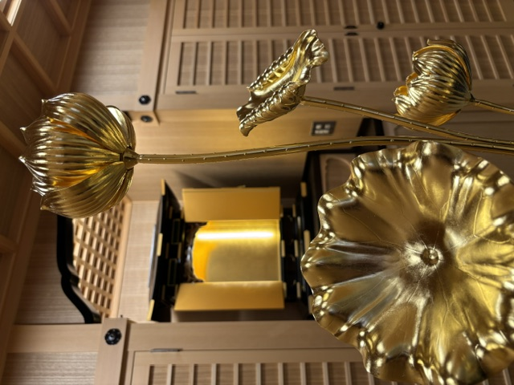

NICHIREN SHOSHU
妙本寺は、日蓮正宗の寺院です。
このページの教義・歴史に関する説明は、日蓮正宗の公式情報を基に構成しています。写真は妙本寺の寺院内の様子をご紹介するものです。
日蓮正宗 妙本寺
宗祖 日蓮大聖人
妙本寺は日蓮正宗の寺院です。このページでは、日蓮正宗の公式情報を基に、宗祖日蓮大聖人の御生涯と教えの概要をご紹介します。
日蓮正宗における日蓮大聖人
日蓮正宗では、法華経の予言のとおり末法の時代に民衆を救済する仏として出現された方が、宗祖日蓮大聖人であるとしています。
日蓮大聖人は、法華経の極理を御本尊として顕され、その御本尊に向かって南無妙法蓮華経の題目を唱えることによって、いかなる人も仏の境界に至ることができると説かれました。
御生涯の主な歩み
1222
貞応元年2月16日、安房東条郷片海（現在の千葉県鴨川市）に御誕生。
1253
建長5年4月28日、安房清澄寺にて南無妙法蓮華経の宗旨を建立（立教開宗）。日蓮正宗はこの宗旨建立に始まります。
1260
文応元年7月16日、『立正安国論』を幕府に奏呈。
1260–1271
松葉ヶ谷法難、伊豆配流、小松原法難などを経て、文永8年（1271）9月12日に竜口法難。同年10月、佐渡へ配流。
1274
文永11年、身延に入山。
1279
弘安2年10月12日、本門戒壇の大御本尊を建立。
1282
弘安5年、日興上人を本門弘通の後継者と定めて仏法を付嘱。同年10月13日、武州池上宗仲の館（現在の東京都大田区）にて61歳で御入滅。
日興上人から総本山大石寺へ
日蓮大聖人から仏法の一切を付嘱された第二祖日興上人は、正応2年（1289）に身延を離れ、翌正応3年（1290）10月12日、南条時光殿の寄進により富士上野の地に総本山大石寺を建立されました。
日蓮正宗では、日蓮大聖人の仏法は日興上人以来、唯授一人の血脈相承によって総本山大石寺に伝えられているとしています。
妙本寺から
妙本寺では、宗祖日蓮大聖人の仏法を生活の中で実践し、信心を次の世代へ伝えていくことを大切にしています。初めての方で、日蓮正宗や信仰について知りたい方も、どうぞ寺院へお問い合わせください。
参考
本ページの宗祖日蓮大聖人に関する基本情報は、日蓮正宗公式ホームページ「日蓮大聖人」および「総本山大石寺」の公開情報を基に構成しています。